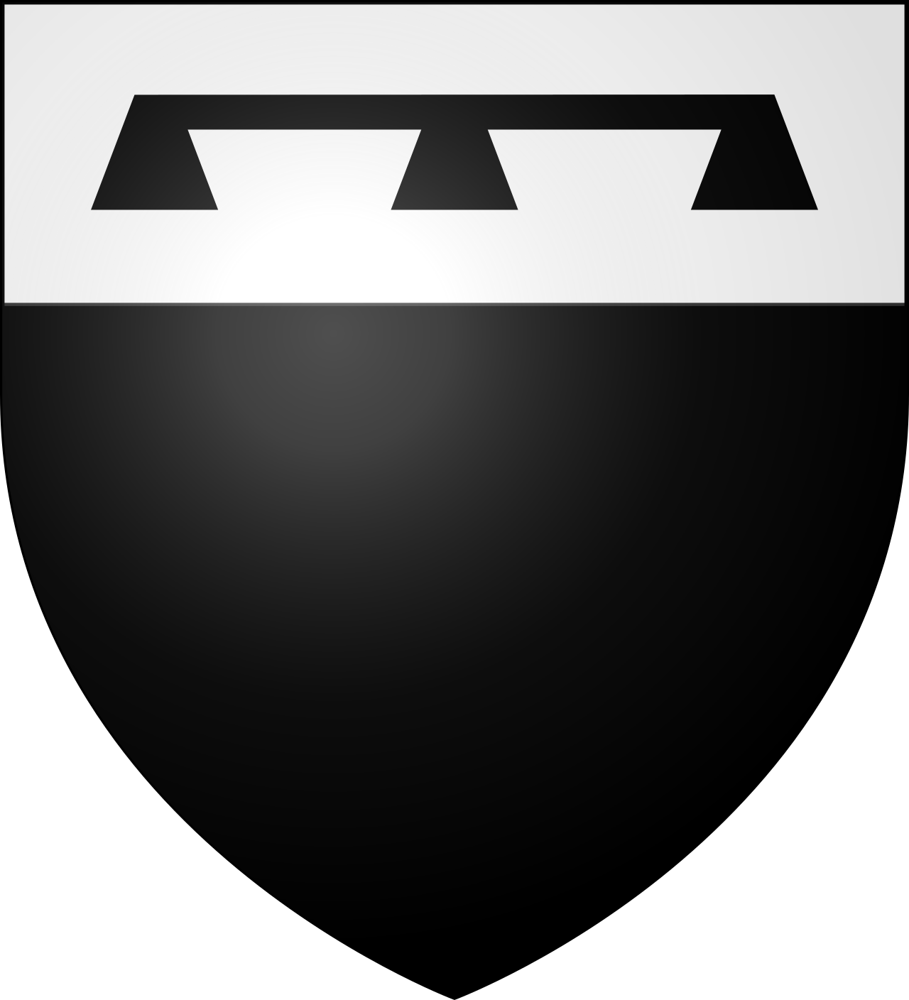

CityLoop Quest Gand


Bien avant les façades de pierre du Korenmarkt, le territoire de Gand était un paysage de bras d’eau, de bancs sableux et de zones humides. La ville s’est formée à la confluence de la Lys et de l’Escaut, un emplacement si déterminant que son nom est souvent rapproché du terme celtique « Ganda », la confluence. Des traces gallo-romaines existent dans la région, mais l’essor urbain se précise surtout au haut Moyen Âge autour de deux abbayes : Saint-Bavon, fondée dans la vallée de l’Escaut, et Saint-Pierre, établie sur le Mont Blandin. Ces communautés religieuses administraient terres, ateliers et réseaux d’échanges ; elles ont contribué à structurer les premiers noyaux d’habitat.
Au IXe siècle, les raids vikings bouleversèrent cette organisation. Les abbayes furent attaquées et les populations cherchèrent des positions plus faciles à défendre. Un castrum se développa près de l’actuel Gravensteen, tandis que les quais marchands s’installèrent le long de la Lys. Le commerce des céréales, du sel, du poisson et surtout de la laine donna rapidement à Gand une importance qui dépassait son arrière-pays. Les marchands importaient la laine anglaise, les artisans la transformaient en drap, puis les produits finis repartaient vers les foires et les ports d’Europe.
Aux XIIe et XIIIe siècles, Gand devint l’une des plus grandes villes au nord des Alpes. Des enceintes successives englobaient de nouveaux quartiers, les paroisses se multipliaient et les corporations acquéraient un poids politique considérable. Les tours de Saint-Nicolas, du Beffroi et de Saint-Bavon marquent encore aujourd’hui ce moment où commerce, religion et liberté communale s’affirmaient dans la pierre. Les canaux n’étaient pas des décors romantiques : ils formaient un réseau logistique serré qui amenait les marchandises au cœur des marchés.
Le développement ne fut jamais régulier. Crises textiles, épidémies, révoltes et guerres interrompirent la prospérité. Au XVIe siècle, Charles Quint fit démanteler une partie de l’abbaye Saint-Bavon pour construire une citadelle destinée à contrôler sa ville natale devenue rebelle. Plus tard, le creusement du canal Gand-Terneuzen, inauguré au XIXe siècle puis élargi, redonna à Gand un accès maritime efficace. Les usines textiles, métallurgiques et chimiques s’installèrent près de l’eau et du chemin de fer, entraînant une expansion rapide hors des anciens remparts.
Le Gand contemporain reste lisible comme une superposition de ces étapes. Le centre médiéval suit encore les méandres de la Lys, les boulevards rappellent l’emplacement des fortifications supprimées, les friches reconverties témoignent de l’âge industriel et les nouveaux quartiers portuaires prolongent le mouvement vers le nord. Pour comprendre la ville, il suffit parfois d’observer une rue qui change soudain de direction ou un quai qui se termine devant une façade ancienne : ces ruptures révèlent le dialogue constant entre l’eau, le commerce et l’urbanisation.
Un autre moteur décisif fut la maîtrise progressive de l’eau. Des fossés défensifs devinrent des canaux, des bras naturels furent rectifiés et des écluses réglèrent les niveaux. La Lieve, creusée au XIIIe siècle vers le Zwin, donna à Gand un accès plus direct aux routes maritimes. Sur les quais, les noms de rues ont conservé la mémoire des produits : grain, bois, légumes, poissons ou charbon. Le visiteur qui suit aujourd’hui la courbe de la Lys marche donc sur le bord d’un ancien système logistique où chaque pont contrôlait des taxes, des chargements et des passages.
À partir du XVIIIe siècle, la ville franchit ses limites médiévales et change d’échelle. Les couvents supprimés, les terrains militaires et les portes devenues inutiles libèrent de nouveaux espaces. Au XIXe siècle, les usines de coton s’installent près des canaux et attirent une population ouvrière considérable. Les faubourgs se densifient, les gares relient Gand au reste du pays et les boulevards remplacent plusieurs remparts. Cette croissance n’efface pas le noyau ancien : elle l’entoure de couches successives. C’est pourquoi Gand offre aujourd’hui, dans un périmètre relativement réduit, une forteresse comtale, des maisons de corporations, des filatures reconverties, des bâtiments universitaires et des quartiers portuaires contemporains.